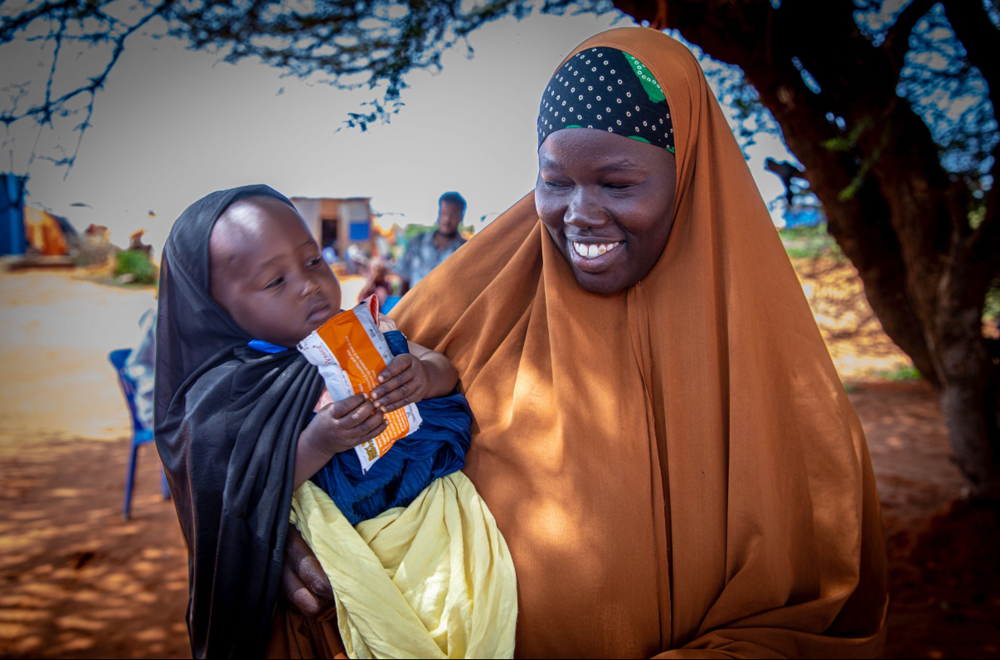

Nutrition
LIFE Somalia improves nutrition outcomes through food assistance, treatment of malnutrition, and promoting healthy dietary practices to combat hunger and enhance community well-being.
Our programs focus on children, pregnant women, and other vulnerable groups to ensure they receive life-saving nutrients and support. By integrating nutrition with health, education, and food security initiatives, we help communities build resilience and thrive in the long term.
